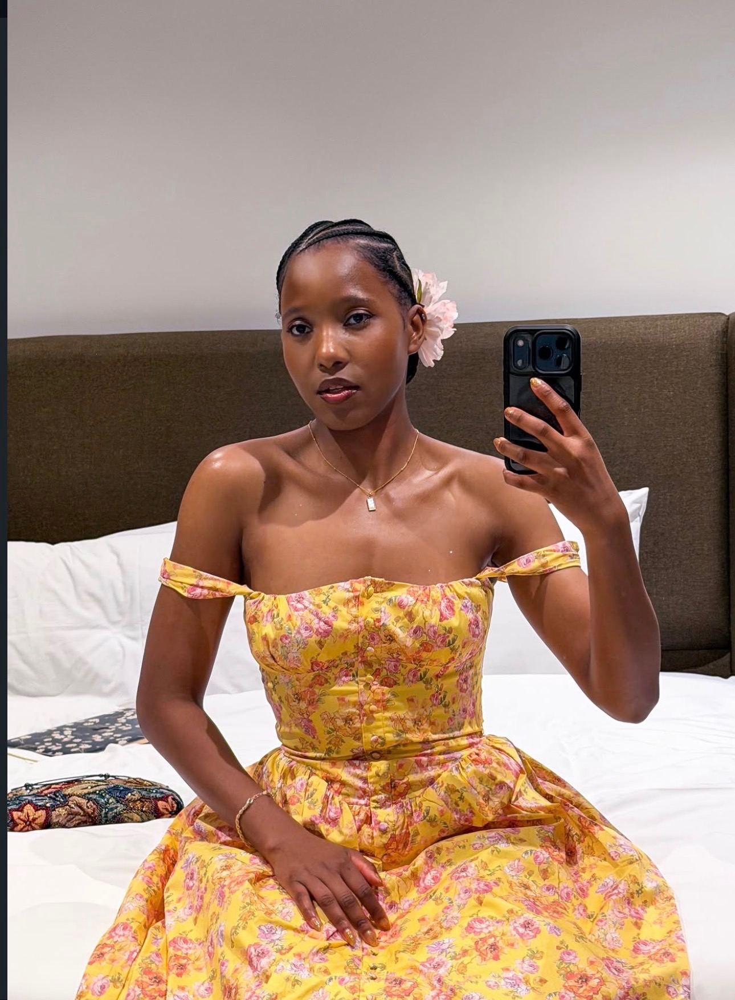

GRACE HOPE AMBASSADOR
Education is a pathway to possibility.
For Wildaïna, advocacy begins with children, opportunity and the belief that education can change a country's future.
HER MISSION
Visibility with responsibility.
Wildaïna is an ambassador for Grace Hope, an organization whose mission is to give youth and children more opportunities, help communities thrive and protect the environment.
She chose to stand behind this mission because she believes children deserve the tools, confidence and opportunities to build a different future.
Visit Grace Hope on Instagram
BACK TO HOPE
A school year should begin with dignity.
The Back to Hope campaign helps children who do not have the proper materials they need for school. It is a practical expression of a larger belief: potential should never be limited by the absence of basic tools.
WHY EDUCATION
“For a country like Haiti, education is one of the most important weapons we can place in the hands of the next generation.”
Wildaïna's advocacy connects her pageant journey to something lasting — opening doors, supporting children and helping young people imagine more for themselves.